Ojer raises each separate instance of noncombat damage from a RED source you control to an opponent to its current power, if the original damage is smaller. It does not increase damage to creatures, damage to you, colorless damage, life loss, or combat damage. Build repeated small damage events, raise Ojer's power, and protect it until those events resolve.
Establish the burn engine
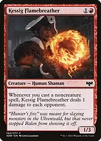
Kessig Flamebreather

Every noncreature spell becomes table-wide damage. Mana rocks, equipment, enchantments, and interaction all trigger it, so developing your board advances the kill.
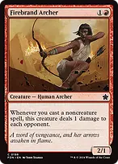
Firebrand ArcherA second broad noncreature-spell payoff. It is fragile, so do not expect it to survive your own Pyrohemia activations or Blasphemous Act.
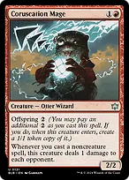
Coruscation MagePaying offspring creates a second independent burn source. With Ojer at four power, the original and token together deal eight to each opponent per noncreature spell. The extra two mana buys another payoff, not merely another small attacker.
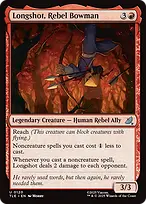
Longshot, Rebel Bowman
Discounts noncreature spells by one generic mana while dealing two to each opponent for each such cast. The discount never removes colored costs, and Ojer raises the two damage only if its power exceeds two.
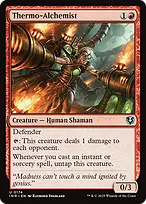
Thermo-AlchemistTap before casting an instant or sorcery, let its untap trigger resolve, then tap again when you get priority. With Ojer at four power, each activation deals four to each opponent. New creatures still need haste before using tap abilities.
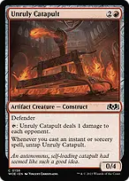
Unruly Catapult
A second tap-and-untap engine with four toughness. Its red mana cost makes it a red source despite also being an artifact. It works with instants and sorceries, not every noncreature spell.
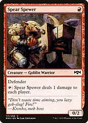
Spear SpewerThe cheapest repeatable table-wide ping, but it also deals one to you. Ojer increases only the opponents' damage. With four players still in the game, a single activation deals four total noncombat damage even without Ojer, enough to satisfy Temple of Power's damage requirement.
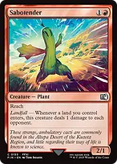
SabotenderLandfall turns every land drop into damage to each opponent. Playing and cracking one of your four fetchlands produces two separate triggers; with Ojer at four power that is eight damage to each opponent.
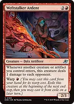
Weftstalker ArdentYour creatures, equipment, rocks, and Treasure tokens all trigger it. Storm-Kiln Artist therefore adds a burn event every time it makes a Treasure. Warp is useful for a finishing turn, but the warped creature leaves at the next end step and cannot be recast from exile until a later turn.
Make opponents' actions costly
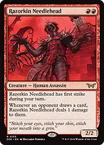
Razorkin NeedleheadEvery opponent's individual card draw causes its own damage trigger. With Ojer at four power, Wheel of Fortune produces seven triggers per opponent for 28 damage each, assuming Ojer and its power remain available when those triggers resolve.
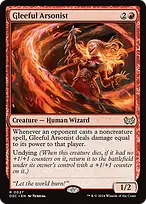
Gleeful ArsonistPunishes opponents for casting noncreature spells and can return once through undying. Its base-power damage remains useful without Ojer, and a power-boosting Equipment can be reassigned to it if the commander is unavailable.
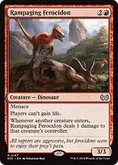
Rampaging FerocidonStops all life gain and punishes creatures entering. Opponents' incoming creatures deal their controllers at least Ojer's power in damage while Ojer is present; your incoming creatures still hurt you for one. Its trigger is not damage to the entering creature.
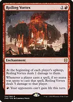
Roiling VortexProvides ongoing damage and can shut off opponents' life gain for a turn. Its free-spell punishment affects you too: a free Deflecting Swat costs you five damage while this is out, and a free zero-mana spell cast normally also qualifies.
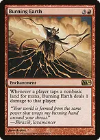
Burning EarthPunishes each nonbasic land tapped for mana. The 26 basic Mountains make it asymmetric in practice, but your own utility lands still hurt you. It does not stop mana production, and Treasure or mana-rock activations do not trigger it.
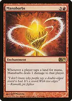
ManabarbsEvery land tapped for mana deals one to you or at least Ojer's power to an opponent while Ojer is present. Deploy when you have a lead, a rock-based mana supply, or a near-term kill. It is dangerous when you are behind on life and must tap several lands to rebuild.
These effects create pressure rather than safety. Three opponents can still attack you or spend life to remove a key permanent. Keep a blocker when useful, and do not expose Ojer unnecessarily in combat just because it has trample.
Raise the damage floor
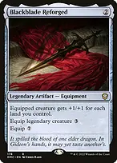
Blackblade ReforgedWith six lands, Ojer becomes a 10/10 and each small red ping deals ten to an opponent. Pay the legendary equip cost of three. Land removal can change this calculation, and the Equipment falls off if Ojer dies and returns as a land.
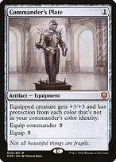
Commander's PlateAdds three power and toughness while protecting Ojer from white, blue, black, and green. Its seven-power floor turns six one-damage events into lethal damage from 40 life. Protection does not answer untargeted exile, sacrifice, or colorless removal.
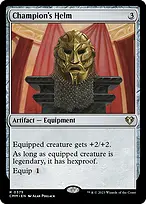
Champion's HelmAdds two power and toughness and gives legendary Ojer hexproof. The cheap equip cost makes it easier to raise the floor while leaving mana for interaction.
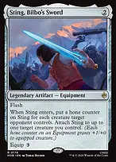
Sting, Bilbo's SwordA flash power boost that attaches on entry, with hone counters based on one targeted opponent's creature count. Choose the widest board. Resolve its entry trigger before the burn event you want to amplify; unlike Blackblade, those counters do not shrink when that opponent's board later changes.
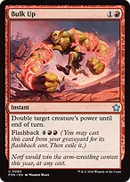
Bulk UpDoubles Ojer's power until end of turn and can be flashed back for six mana. Cast it before a finishing sequence or in response to an already-pending damage trigger. A burn trigger caused by casting Bulk Up goes above Bulk Up and normally resolves before the power increase.
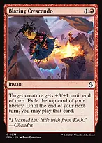
Blazing CrescendoAdds three power for the turn and gives an exiled card playable through your next turn. It is both a finishing boost and a way to keep moving through the deck, but it targets a creature and is vulnerable to removal in response.
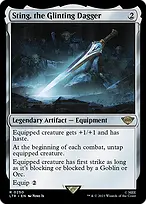
Sting, the Glinting DaggerUsually belongs on Thermo-Alchemist, Unruly Catapult, or Spear Spewer. It gives haste and untaps the equipped creature at the beginning of EVERY combat. Tap before that trigger resolves and again afterward when useful; on an opponent's turn, take the first activation before combat begins if necessary.
Damage multipliers are not a shortcut to multiplying Ojer's minimum. The player taking damage chooses the order of applicable replacement effects. This list focuses on power and distinct damage events so the burn math remains dependable.
Finish the table without an infinite loop
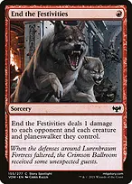
End the FestivitiesOne mana produces a damage event to every opponent and sweeps one-toughness opposing creatures. Ojer boosts damage to the players only; opposing creatures and planeswalkers still take one. Tectonic Hazard is a second copy of the plan without the planeswalker damage.
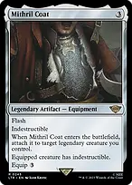
Mithril CoatFlash it in to make Ojer indestructible and keep it through your own Pyrohemia or Blasphemous Act. Its entry trigger attaches only to a legendary creature. Indestructibility does not answer exile, bounce, sacrifice, or zero toughness.
Example: With Ojer at four power, Mithril Coat attached, Neheb, and Pyrohemia, two precombat Pyrohemia activations deal eight to each opponent and two to you. Neheb then makes 24 red mana in your postcombat main phase if all three opponents remain. Eight more activations can finish opponents who started at 40, while Ojer survives; you still take eight more yourself, and Neheb eventually dies to accumulated damage. This requires an established multi-card board and is not an infinite loop.
Another route is Ojer with Commander's Plate, Razorkin Needlehead, and Wheel of Fortune: seven draws create seven separate seven-damage triggers per opponent, totaling 49 each if the engine survives. Opponents draw their new answers before those damage triggers resolve, so protection matters.
Only combat damage actually dealt by your commander counts toward 21 commander damage. The deck's boosted pings and Needlehead triggers kill through ordinary life totals.
Keep mana and cards flowing

Sol RingAccelerates Ojer's generic cost and your Equipment, but does not pay the two red symbols or repeated Pyrohemia activations. Arcane Signet provides red; Mind Stone can become a card when its mana is no longer needed.

Fellwar StoneTwo-mana acceleration that enters untapped and helps cast Ojer on turn three after three land drops. It produces red only if an opponent's land could produce red, so do not assume it supplies Ojer's colored costs. Other available colors can still pay generic costs.

Liquimetal TorqueAnother untapped two-mana accelerator for Ojer's generic cost. Its second ability turns an opposing nonland permanent into an artifact for Abrade, Vandalblast, or Fiery Confluence to destroy. It must tap for either mana or conversion, so reserve other mana for the removal spell.

Ruby MedallionReduces generic costs of red spells and helps chain draw and burn spells together. It does not reduce Equipment costs, equip abilities, or a spell that costs only red mana.
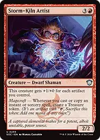
Storm-Kiln ArtistMakes a Treasure for each instant or sorcery cast or copied. This supplies more spells and triggers Weftstalker Ardent. Its own growing power is unrelated to Ojer's power.
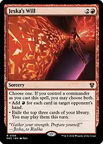
Jeska's WillA Game Changer that supplies both red mana and three exiled cards when you control your commander. Use it after establishing damage sources, with enough available resources to play the cards that turn. If Ojer is on its land face, it is still your commander.

The One Ring
The second Game Changer rebuilds your hand and buys a turn of protection when cast. That protection can prevent damage from your symmetrical burn to you, but does not protect your creatures and does not stop life loss from burden counters. Ongoing burden loss makes this a finishing-game engine, not a reason to wait indefinitely.
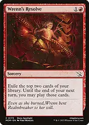
Wrenn's ResolveTwo cards playable through the end of your next turn. Reckless Impulse provides redundancy. Make a land play available where possible, and remember that playing a land from exile still uses your ordinary land allowance.

Faithless LootingFilters excess lands and situational answers, with flashback for another pass later. It is card selection rather than net card advantage. Witch's Mark can similarly replace a discarded card with two draws while giving Ojer a +1/+1 Role; that Role's death ability causes life loss, which Ojer does not increase.
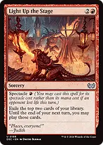
Light Up the StageAfter an opponent loses life, spectacle provides two cards playable through your next turn for one red mana. Activate an available pinger first to enable the discount; a cast trigger caused by Light Up the Stage itself occurs too late to enable spectacle for that cast. Save a land play when possible to use an exiled land.
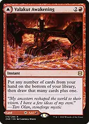
Valakut Awakening // Valakut StoneforgeA tapped red land when your opening hand needs one, or an instant that replaces unwanted cards and draws one extra. Shatterskull Smashing is the other land/spell card and supplies scalable creature or planeswalker removal rather than player damage.
Protect the commander and answer the real obstacle

Swiftfoot BootsHexproof while preserving your ability to target Ojer with your own pump and equip effects. Haste also lets a newly cast tap-pinger contribute immediately when you move the Boots.
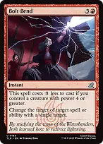
Bolt BendNormally costs one red with Ojer present because its power is at least four. It handles a spell or ability with a single target; it is not a counterspell and needs a different legal target to change to.
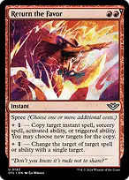
Return the FavorCosts three mana for either copying or single-target redirection, or four for both; the printed two red mana is only the base cost. Copy Fiery Confluence for another full set of chosen modes, copy a useful trigger, or redirect a key removal spell.

PyroblastEfficient protection against blue counterspells and a way to remove blue permanents. Red Elemental Blast supplies a second copy of those jobs. Neither is a general answer to spells of other colors.
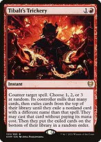
Tibalt's TrickeryA rare mono-red answer to an otherwise decisive spell, including a wipe. The replacement spell can be dangerous, so use it when the known spell would lose the game rather than countering a minor value play.
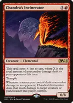
Chandra's Incinerator
Your boosted player damage discounts this to as little as one red. Subsequent noncombat damage to opponents creates matching damage triggers at their creatures or planeswalkers, allowing the burn engine to control the board as it kills. Ojer does not increase the creature damage a second time.

Soul-Guide LanternExiles one graveyard card on entry and can sacrifice without additional mana to exile all opponents' graveyards. Keep it ready against recursion decks; its draw mode is a fallback when graveyard interaction is irrelevant.
Find the missing piece and recover

GambleThe third Game Changer searches for any missing function: The One Ring for cards, a protective Equipment for Ojer, Fiery Confluence to finish, or Chaos Warp for a critical permanent. Random discard is real; use it while holding several cards when possible rather than treating it as a guaranteed tutor.
When Ojer dies, leave it in the graveyard if you want its trigger to return it tapped as Temple of Power. Moving it to the command zone first prevents that return. Exile and bounce do not trigger this death ability. Equipment stays behind unattached when Ojer leaves.
Temple of Power needs four total noncombat damage from red sources you controlled that turn; the damage may be to you, opponents, creatures, or other eligible objects. With four players, Spear Spewer alone supplies four total. The land must be untapped to pay its tap cost, and you also need three mana from elsewhere; transform only at sorcery speed. Transforming in place does not trigger enters-the-battlefield effects.
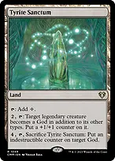
Tyrite SanctumCan put a +1/+1 counter on Ojer, or sacrifice itself for four mana to put an indestructible counter on it. Ojer is already a God, so the first activation is not a prerequisite for the second. It makes colorless mana, so protect your access to enough red sources.
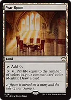
War RoomLate-game draw from a land for three mana, its tap, and one life. Nykthos can produce substantial red mana from the board's red devotion; calculate the two-mana activation cost before relying on it.
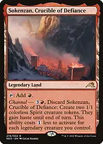
Sokenzan, Crucible of DefianceUsually an untapped red land. Its channel ability supplies two emergency blockers or two Weftstalker Ardent triggers. The Spirit tokens themselves are colorless, though Ardent remains the red source of its damage.
Opening hands and sequencing
Keep three lands, an accelerator or cheap draw spell, and a repeatable damage source. Two-land hands need affordable card access or ramp and a realistic path to the third and fourth lands. Mulligan hands of several Equipment pieces with no engine or development.
Develop a cheap pinger, then mana or card access. Cast Ojer when it immediately makes existing triggers threatening or when you can protect it. A turn spent leaving mana open is often better than equipping into obvious removal with no response.
An ideal accelerated sequence is turn-one Spear Spewer, a turn-two two-mana rock, and turn-three Ojer using three lands plus that rock. Ensure at least two available mana sources produce red. The existing Spewer can then deal four to each opponent immediately; expensive equipment can wait until the damage engine is already operating. This four-card refinement improves early development without adding rituals or removing Unruly Catapult, Tyrite Sanctum, or Blackblade Reforged.
There are 34 normal lands plus two modal land/spell cards, giving 36 potential land plays. The four fetchlands are here for double Sabotender and Valakut Exploration triggers, not for deck thinning. Fetch Mountains before leaning on Burning Earth; only three lands naturally produce exclusively colorless mana before their other abilities are considered.
Sequence a power boost before the damage you want increased. If its cast itself triggers a pinger, that trigger resolves before the boost. Equipment equip is normally sorcery speed; Sting, Bilbo's Sword and Mithril Coat work at instant speed because their entry triggers attach them.
Before committing to a kill, count damage to EACH opponent, your own life loss, Pyrohemia damage marked on your creatures, and mana available after protection. Your enchantments and card engines keep working without Ojer, but your clock becomes much slower; prioritize recovering it or winning with resources already accumulated.